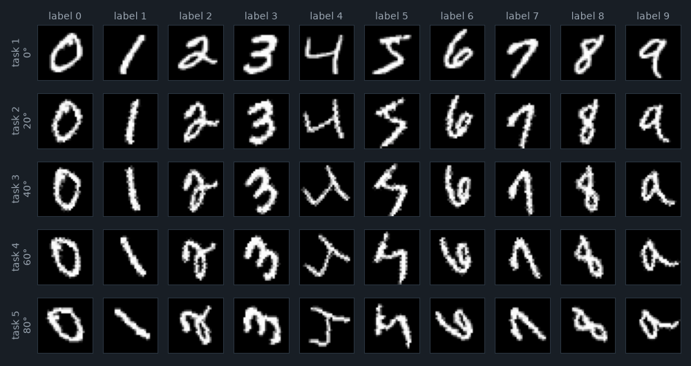

1.1 MNIST 與 Data 類別
MNIST 是手寫數字 0–9 的資料集：訓練集 60,000 張、測試集 10,000 張，每張是 28×28 的灰階圖，像素值 0–255，數字大致置中、筆畫是白色、背景是黑色。它是深度學習最常用的入門資料集，四層全連接網路就能在測試集上拿到 98% 左右的準確率（第 0 章的成績表裡，每種方法學完任務 1 時都在 97.3–98.0 之間）。
本 repo 用一個很薄的類別把 torchvision 內建的 MNIST 包起來：
class Data():
def __init__(self, path, train=True, angle=None):
transform = get_transform(angle)
self.dataset = datasets.MNIST(root=os.path.join(path, "MNIST"), transform=transform, train=train, download=True)Data 本身不是 PyTorch 的 Dataset，它只是把一個 datasets.MNIST 存在 self.dataset 裡；之後交給 DataLoader 的是 data.dataset（第 0 章 train.py 第 245 行）。三個參數的意思：
path：資料放哪裡。train.py傳的是'data'，所以root是data/MNIST。torchvision 的 MNIST 會在root底下再建一個以類別名稱命名的資料夾，原始檔實際放在data/MNIST/MNIST/raw/（實測raw_folder就是這個路徑）。路徑看起來重複，但不影響使用。train：True取 60,000 張的訓練集，False取 10,000 張的測試集。angle：這份資料要轉幾度，交給get_transform（1.2 節）。
download=True 的意思是「檔案不在就下載，在就直接讀」。train.py 建了 10 個 Data（五個角度 × 訓練／測試），只有第一個會真的下載，之後九個都是讀同一份檔案。每個 datasets.MNIST 會把整份圖片讀進記憶體成為一個 uint8 張量，60,000 張 28×28 約 47 MB；五份訓練集就是五份相同的副本，這在 MNIST 上無所謂，換成大資料集就不行了。
這裡有一件讀程式時容易忽略、卻決定了整份作業性質的事：五個任務的訓練資料是同一批圖片、同一組 label，只有轉換不同。實測五份訓練集的前五個 label 都是 [5, 0, 4, 1, 9]。所以「任務 2」不是新的資料，是「任務 1 的每一張圖都轉 20°」。模型在五個任務裡要分的都是同樣的十個類別，變的只有輸入長什麼樣子。這種設定在持續學習的文獻裡叫 domain-incremental（領域遞增：類別不變、輸入的分布改變），第 8 章介紹「三種情境」時會再回來。
1.2 一張圖經過的三步轉換
datasets.MNIST 每取一張圖，都會先把它變成 PIL 影像，再交給 transform。這份作業的 transform 由三步組成：
def get_transform(angle=None):
transform = transforms.Compose([transforms.ToTensor(),
transforms.Lambda(lambda x: _rotate_image(x, angle)),
Pad(28)
])
return transformtransforms.Compose 把一串轉換串起來，依序執行。三步分別是：
ToTensor()：PIL 影像 →torch.float32張量，形狀從 28×28 變成(1, 28, 28)（多一個 channel 維），像素值從 0–255 除以 255 變成 0–1。實測第一張訓練圖：形狀torch.Size([1, 28, 28])、最小值 0.0、最大值 1.0、label 5。這裡沒有做常見的「減平均、除標準差」正規化，模型看到的就是 0–1 的原始亮度。- 旋轉：
transforms.Lambda把一個普通函式包成轉換，這裡包的是「呼叫_rotate_image(x, angle)」。 Pad(28)：補邊到 28×28。1.3 節會看到，這一步對 28×28 的圖什麼都沒做。
lambda 裡的 angle 為什麼不會被後面的任務蓋掉
Python 的 lambda 不是在建立時記下 angle 的值，而是記下「去哪裡找 angle 這個名字」，執行時才去查。常見的陷阱是在 for 迴圈裡寫 lambda，最後每個 lambda 查到的都是迴圈跑完時的值。這裡沒有這個問題：angle 是 get_transform 的參數，每呼叫一次 get_transform 就有一個新的區域變數 angle，五個任務的 lambda 各自綁在不同的那一次呼叫上。第 1.5 節的樣本圖就是驗證：五列轉的角度確實不同。
真正做旋轉的是這個函式：
def _rotate_image(image, angle):
if angle is None:
return image
image = transforms.functional.rotate(image, angle=angle)
return imagetrain.py 傳進來的角度是 0、20、40、60、80，從來不是 None，所以任務 1 也會呼叫一次「轉 0°」。transforms.functional.rotate 只傳了 angle，其餘參數都用預設值。在 torchvision 0.26 實際查到的簽名是：
(img: torch.Tensor, angle: float, interpolation: torchvision.transforms.functional.InterpolationMode = <InterpolationMode.NEAREST: 'nearest'>, expand: bool = False, center: Optional[list[int]] = None, fill: Optional[list[float]] = None) -> torch.Tensor這幾個預設值各自決定了圖長什麼樣子：
- 方向：正的角度是逆時針。實測把一張只有上方中央（第 2 列、第 14 行）一個亮點的圖轉 +90°，亮點跑到
[13, 2]，也就是左側中間。 interpolation=NEAREST：最近鄰插值。轉完之後每個新像素直接拿「最靠近的那個舊像素」的值，不做平均，所以筆畫邊緣會出現鋸齒（下面的圖可以看到）。換成BILINEAR會平滑一些，但這份作業沒有改。expand=False：轉完之後畫布大小維持 28×28，轉出畫布的部分直接切掉。center=None：繞著圖的中心轉。fill=None：轉進來的空白角落補 0，也就是黑色，剛好和 MNIST 的背景一樣。
切掉的部分會不會吃掉筆畫？MNIST 的數字本來就縮在中央約 20×20 的範圍裡，轉 80° 也幾乎不會碰到邊。實測測試集前 2,000 張，轉完之後的總亮度和原圖相比是 0.9995（20°）、0.9988（40°）、1.0000（60°）、1.0057（80°）。最近鄰插值會讓某些像素被複製兩次、某些被跳過，所以總亮度有時略增、有時略減，但差異都在 0.6% 以內：旋轉沒有丟掉資訊，只是把它搬了位置。
1.3 什麼都沒做的 Pad(28)
class Pad(object):
def __init__(self, size, fill=0, padding_mode='constant'):
self.size = size
self.fill = fill
self.padding_mode = padding_mode
def __call__(self, img):
# If the H and W of img is not equal to desired size,
# then pad the channel of img to desired size.
img_size = img.size()[1]
assert ((self.size - img_size) % 2 == 0)
padding = (self.size - img_size) // 2
padding = (padding, padding, padding, padding)
return F.pad(img, padding, self.padding_mode, self.fill)一個有 __call__ 方法的物件可以像函式一樣被呼叫，transforms.Compose 就是靠這個串起每一步。Pad 的邏輯是：讀出圖的高度（第 32 行，img.size() 是 (1, 28, 28)，[1] 取到的是 28），算出「離目標大小還差多少、每邊補一半」，再用 torch.nn.functional.pad 在左右上下各補那麼多格的 0。第 33 行的 assert 確保差距是偶數，才能平均分到兩邊。
問題在於目標大小是 28，輸入也是 28：第 34 行算出來的 padding 是 (28 − 28) // 2 = 0，四邊各補 0 格。expand=False 的旋轉不會改變圖的大小，所以進到 Pad 的永遠是 28×28。實測 torch.equal(Pad(28)(x), x) 是 True：輸出和輸入一模一樣。
它為什麼在這裡？程式裡沒有說明。一個線索是：F.pad 收到負的 padding 時不會報錯，而是從邊緣裁掉那麼多格。實測把旋轉改成 expand=True（畫布放大到裝得下整張轉過的圖），五個角度的畫布分別是 28、36、40、40、34 格寬，差距都是偶數，assert 通過；Pad(28) 算出 −4、−6、−6、−3 格，把中央裁回 28×28，結果和 expand=False 的輸出 torch.equal。所以這個類別在「畫布會變大」或「圖比 28 小」的設定下才有作用，在這份作業的設定裡只是多算一次 F.pad。它多半是從別的版本的程式留下來的，本書無法確認。順帶一提，註解說「pad the channel of img」也不準確：它補的是高與寬，不是 channel。
讀 code 不盡信文件：Pad 的名字和註解都暗示它有作用
看到 Pad(28)，很容易以為「圖被補成 28×28，所以原圖比較小」。實際上 MNIST 本來就是 28×28，Pad 在這裡是空操作。判斷一段前處理有沒有作用，最快的方法不是讀它的註解，而是拿一張真實的輸入跑一次、比對前後：torch.equal 一行就能回答。
1.4 五個任務，不是十個
# Training arguments (HW14.ipynb, "Dataloaders and Arguments")
class Args:
task_number = 5
epochs_per_task = 10
lr = 1.0e-4
batch_size = 128
test_size=8192
args=Args()
# generate rotations for the tasks.
# generate rotated MNIST data from 10 different rotations.
angle_list = [20 * x for x in range(args.task_number)]Args 是一個只用來放設定的類別，args=Args() 建一個實例，之後用 args.lr 這樣的寫法取值（這是 notebook 裡模仿 argparse 的常見寫法；第 9 行建實例其實不必要，直接用 Args.lr 也一樣）。第 15 行的 list comprehension 算出 [0, 20, 40, 60, 80]：range(5) 是 0–4，乘上 20。
第 13 行的註解說「from 10 different rotations」，但程式只有 5 個角度。這不是唯一一處：
| 位置 | 原文 | 實際 |
|---|---|---|
| notebook [9] 說明文字 | we utilize 5 different rotations to generate 10 different rotated MNISTs as different tasks | 5 個角度、5 個任務（task_number = 5），每個任務各有一份訓練集與一份測試集 |
notebook [11]、dataset.py:7 註解 | # Rotate MNIST to generate 10 tasks | |
notebook [13]、config.py:13 註解 | # generate rotated MNIST data from 10 different rotations. | |
| notebook [28] EWC 說明 | In this assignment, we want to let our model learn 10 tasks successively. |
投影片 p.10 寫的是「5 task / Each task has 10 epoches」，p.12 畫的也是 5 個任務、每個多轉 20°，和程式一致。最可能的解釋是前一年的版本用了 10 個任務，程式改成 5 個之後說明沒有跟著改；也可能是把「5 個訓練集＋5 個測試集＝10 份資料」寫成了「10 個任務」。不論原因，以程式為準：5 個任務。選擇題如果問「這份作業有幾個任務」，答案是 5。
其餘四個設定在第 2 章讀訓練迴圈時會一一用到：每個任務 10 個 epoch、Adam 的學習率 1e-4、訓練 batch 128、測試 batch 8192。換算成 batch 數（實測 len(DataLoader)）：
- 訓練：60,000 ÷ 128 = 468.75，所以一個 epoch 是 469 個 batch，最後一個只有 96 張（
DataLoader預設drop_last=False）。一個任務 10 個 epoch 是 4,690 步，五個任務共 23,450 步。 - 測試：10,000 ÷ 8192，所以是 2 個 batch（8,192 張與 1,808 張）。
test_size設這麼大只是為了評估時少跑幾次迴圈。
回頭看第 0 章 train.py 第 244–248 行：五個角度各建一個訓練用 DataLoader（shuffle=True）和一個測試用 DataLoader（也是 shuffle=True）。測試資料要不要打亂，對準確率沒有影響（加總起來都是同樣 10,000 張），卻會用掉亂數，第 2 章會看到它怎麼影響訓練。
1.5 任務之間有多像
先看圖。notebook 的 Visualization 一格會畫出「每個任務、每個 label 各取第一張」；本 repo 沒有把這格搬進 train.py（它不影響結果，也不用到亂數），下面是用同樣的取法（訓練集裡每個 label 第一次出現的那張，索引是 1、3、5、7、2、0、13、15、17、4）重新畫的：

對人來說，轉 80° 的 1 還是 1：我們會在腦中把它轉回來。但第 0 章看過，這個模型的第一步是把圖攤平成 784 個數，它沒有「旋轉」這個概念，只看得到「第 i 個像素亮不亮」。轉了 20° 之後，原本亮的像素有很多變暗了、原本暗的變亮了，在模型眼裡這是一組不一樣的 784 個數。
要把「在模型眼裡有多像」量成數字，一個簡單的方法是把兩張圖攤平成 784 維的向量，算 cosine similarity（餘弦相似度，兩個向量夾角的 cosine：方向完全相同是 1，完全無關是 0；像素都是非負的，所以這裡不會出現負值）。對測試集前 2,000 張，把每一張「轉過的版本」和「原圖」配對、取平均，並放上兩個參考值：
| 比較的兩張圖 | 平均 cosine similarity | baseline 學完任務 1 時，在這個任務的準確率 |
|---|---|---|
| 同一張圖，轉 0°（任務 1 自己） | 1.000 | 98.03 |
| 同一張圖，轉 20°（任務 2） | 0.604 | 90.53 |
| 同一張圖，轉 40°（任務 3） | 0.408 | 55.66 |
| 同一張圖，轉 60°（任務 4） | 0.323 | 25.68 |
| 同一張圖，轉 80°（任務 5） | 0.293 | 14.02 |
| 參考：兩張不同的圖，label 相同（都不轉） | 0.520 | — |
| 參考：兩張隨機的圖（都不轉） | 0.391 | — |
右欄是第 0 章那次參照執行裡，baseline 剛學完任務 1（第 10 個 epoch 結束）時，在五個任務測試集上各自的準確率；它還沒看過任何一張轉過的圖。兩欄一起讀：
- 轉 20° 的圖，還比「另一個人寫的同一個數字」更像原圖（0.604 對 0.520）。所以只學過正放數字的模型，在任務 2 也有 90.53%：任務 2 對它來說大致是「換了一批寫法」。
- 轉 60° 以後，同一張圖比兩張隨機的圖還不像（0.323、0.293，都低於 0.391）。在像素空間裡，轉 60° 的 7 和原本的 7 之間的距離，比原本的 7 和隨便一個 3 之間還遠。模型在任務 4、5 上只剩 25.68% 與 14.02%，離亂猜的 10% 不遠。
- 相似度和準確率一起單調下降。角度差越大，兩個任務對這個模型來說越是「不同的問題」。
這張表預告了後面各章會一再看到的現象。學任務 2 時，模型要做的調整不大，因為任務 2 和任務 1 很像；學任務 5 時，模型要把權重往一個和任務 1 很不一樣的方向推。第 3 章會看到，baseline 忘得最多的是任務 1（98.0 → 35.4），也就是和最後一個任務角度差最大的那一個；正則化方法要保護的，正是這種「新任務要的改變」和「舊任務要的權重」衝突最大的地方。
現在的做法：旋轉 MNIST 只是教學用的基準
Rotated MNIST 和它的兄弟 Permuted MNIST（每個任務用一個固定的隨機排列打亂 784 個像素）是 2017–2019 年持續學習論文最常用的基準，因為它小、快、任務數可以任意調。後來的研究指出它們太簡單、太人工：任務之間的差異是人為設計的，類別完全不變，和真實世界的資料變化不像。現在的基準多半改用 Split CIFAR-100、CORe50、CLEAR 這類「類別或環境真的在變」的影像資料集；對大型語言模型，則是「先預訓練、再用某個領域的資料微調」，量它在原本的能力（知識問答、安全拒答等）上退步多少，ML2025 HW6 與 ML2026 HW5 就是這種設定。另一方面，對影像模型而言，「旋轉」現在通常被當成 data augmentation（資料增強）放進同一個訓練裡，或者用卷積網路與旋轉等變的架構處理，而不是拿來切成不同的任務。
本章重點
Data包住 torchvision 的 MNIST；五個任務用的是同一批圖片與 label，只有旋轉角度不同：類別不變、輸入分布改變（domain-incremental）。- 一張圖經過
ToTensor（0–1、形狀(1, 28, 28)、沒有減平均除標準差）→rotate（逆時針、最近鄰插值、畫布不放大、角落補 0）→Pad(28)。旋轉幾乎不丟亮度（差異在 0.6% 以內）。 Pad(28)對 28×28 的圖補 0 格，torch.equal實測輸出與輸入相同，是空操作；它只在畫布變大（例如expand=True，這時負的 padding 會裁回 28×28）或圖比 28 小時才有作用。- 說明與註解四處寫「10 個任務」，程式與投影片都是 5 個：0°、20°、40°、60°、80°。訓練一個 epoch 469 個 batch（最後一個 96 張），測試 2 個 batch。
- 攤平之後的 cosine similarity：轉 20° 是 0.604，比「同 label 的另一張圖」（0.520）還像；轉 60°、80° 只剩 0.323、0.293，比兩張隨機圖（0.391）還不像。只學過任務 1 的模型在五個任務上是 98.03／90.53／55.66／25.68／14.02，和相似度一起單調下降。
自我測驗
1. 如果把 Pad(28) 從 get_transform 裡拿掉，訓練結果會改變嗎？
不會。Pad(28) 對 28×28 的輸入四邊各補 0 格，實測輸出與輸入 torch.equal；它也不用亂數。拿掉它，模型看到的每一張圖都和原本相同，結果應該逐位元一樣。本書沒有實際重跑六種方法驗證這一點，但這一步沒有任何作用是實測過的。
2. 如果把 dataset.py 的 rotate 加上 expand=True，會發生什麼事？
畫布會放大到裝得下整張轉過的圖：實測任務 2–5 是 36×36、40×40、40×40、34×34。但結果不會改變：差距都是偶數，Pad 的 assert 通過，算出的 padding 是負數，F.pad 遇到負數會從四邊裁掉，剛好把中央裁回 28×28；五個角度的輸出都和原本的 torch.equal（1.3 節）。如果某個角度讓畫布大小和 28 差奇數格，assert 就會失敗；這五個角度沒有遇到。
3. 任務 2 的訓練集和任務 1 的訓練集，label 的分布一樣嗎？
完全一樣。五個任務是同一批 60,000 張圖、同一組 label，只是轉換不同；實測五份訓練集前五個 label 都是 [5, 0, 4, 1, 9]。所以每個任務都是同樣的十類分類問題，變的只有輸入。
4. 只學過任務 1 的模型，在任務 5 上有 14.02%。這比亂猜好多少？為什麼不是 0%？
十類亂猜的期望準確率是 10%，14.02% 只比亂猜好一點。不是 0% 是因為有些數字轉 80° 之後在像素上仍有部分重疊（例如 0 轉了還是一個圈），而且模型對任何輸入都會給出某個類別，就算全錯也會碰巧猜對一些。
延伸閱讀
- torchvision 文件：torchvision.transforms.functional.rotate（本章用到的預設值都在這裡）。
- Yann LeCun 等，The MNIST database of handwritten digits。
- David Lopez-Paz、Marc'Aurelio Ranzato，Gradient Episodic Memory for Continual Learning（2017）：GEM 的論文，也是最早用 Rotated MNIST 當持續學習基準的論文之一；GEM 本身在第 8 章介紹。
- Sebastian Farquhar、Yarin Gal，Towards Robust Evaluations of Continual Learning（2018）：檢討 Permuted MNIST 這類基準為什麼太簡單。